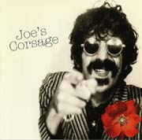
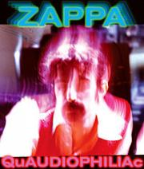

Заппа'zУх!Ой!
русский более или менее регулярный бюллетень для поклонников американского композитора
Frank'а Vincent'а Zappa'ы
Выпуск.53 (15 Октября 2004)
Очередное не то
Николаю Демидову
Zappa Family Trust, ZFT, на своих сундуках полных неизданного добра напоминает беременную бабу. Сношку из анекдота. Те же ухватки и выходки. Чего только не наслушаешься, не отгребешь и не получишь, прежде чем наследника дождешься. Пацана.
Уже который год, пятый, десятый, (после Двухсот Мотелей) во всех официальных, неофициальных, офф-лайновых, он-лайновых, правых и левых списках, wish-list'ах, вторым и первым только два пункта - Wazoo tours семьдесят второго и Hot Rats Band коллекция семидесятого. Выпустите, издайте наконец. Please. Bitte. S'il vous plais. Пожалуйста! Порадуйте, чертяки!
А ZFT - фиг вам. Никак не разродится. Не выносит красивого. То моркови попросит натереть, то свеклы с хреном. Ей может быть и хорошо. Полезно для здоровья. А фэнам от этих корнеплодов хоть беги. Прячься. В шкаф или под стол.
В отчетном году, вообще, урожай. Целых три на свет явились. Из недр. Из глубины. Поднялись. Кушайте, друзья Горы и поросенка Гришы.
Номер первый. Joes Corsage. (Vaulternative VR 20041, May 30, 2004). Даже в расстройстве невозможно факта не признать, вещица во всех отношения дивная. Бриллиант и изумруд.
|
 |
|
Славный, в лучших традиция FZ, вертикальный срез времени. Слоистая порода эпохи post-Cucamonga pre-Freak-Out!. В музей, кунсткамеру. Геологу и антропологу на заметку.
Два портфолио демо-записей молодых талантов. Первое 1965 года (с номера 2 по 5) - примечателен присутствием "другого гитариста". Henry Vestine. Фотку видели. Читали в книжке. А вот и очное знакомство. Здрастье. Состоялось.
Зато второй папочке, картинкам 1966 (с номера 9 по 11) - особую прелесть и свежесть придает как раз то, о чем нам книжки и журналы до сих пор не сообщали. Попс-перл пленяет. Темнота - друг молодежи.
Looking forward to that day
When she will love me in her way
All day long I sit and pray
Someday soon I'll hear her say
. . .
I'm so happy I could cry
I'm so happy I could cry
I'm so happy I could cry
Текстовочка убойной лирической силы по-меньшей мере Louie Louie Ричарда Берри, положенная при этом без всякого стесненья на мотивчик, знакомый нам по переливам прямо противоположных чувств. Take Your Clothes Off When You Dance. В общем, опять обсерватория. Зал естественных наук. Наглядное пособие. Негатив и позитив. Процесс обращения.
Между этими выставочными комплектами ушедших дней - заловый, бум-бум, звук той же далекой поры (номера 6, 7 и 8). Мамки на подмостках бара. Broadside. Pomona. California. Неплохо.
И все это прослоено неутомительными отрывками из интервью. Нарезкой баритона. Знакомый, родной голос. Понятные слова.
Interviewer: Who came up with the name "Mothers of Invention"?
FZ: I did.
Interviewer: Just picked it?
FZ: Well, it was sort of forced upon me because, uh, the group was originally called "The Mothers" and, uh, our
original contract was with Verve Records, a subsidiary of MGM, and they refused to sign a group called "The
Mothers" because they felt that the . . . that it was obscene. And so they wanted to change it to "The Mothers
Auxiliary." So, out of necessity, we became "The Mothers of Invention." Is that pretty pat?
Interviewer: That's it.
FZ: That's what happened.
Да. Замечательная штучка. Слушается легко. Заводится неоднократно. Детские шалости всегда приятно вспомнить. Годочки босоногие. Как свои, так и чужие.
Естественно.
Но после пятого повтора очарование как-то само собой ослабевает. Тает. И понимаешь. Большой уже. Осознаешь. Елы-палы, а ведь опять купили. Снова редьку подсунули. Красивое не то.
А то, оно совсем другое. Совершенно иного сорта.
"KING KONG (19:14) - Для меня эти два концерта представляются некой Запповской версией периода "Bitches Brew" Miles'а Davis'а. Программа, составленная из песен с простой базовой структурой, каждая из которых просто трамплин на длинных совместных импровизаций. И хотя Фрэнк (потому, что он Фрэнк) в любом случае выходит на нечто более или менее организованное, именно это исполнение "King Kong'а" демонстрирует нам какой заводной может быть его музыка и в том случае, когда он разрешает себе и другим просто играть. (Очень похожий подход характерен и для двух Wazoo tours семьдесят второго, но тем не менее, они все же отдают атмосферой куда более жесткой организации).
А теперь после длинного предисловия собственно к песне. Сходу быстренько объявив несколькими тактами темы о начале этого грандиозного представления, Ian входит в свое первое соло. Коротенькое, но вполне достаточное, чтобы разогнать махину композиции для первого вступления уже Фрэнка. Это очень хорошее соло - вдохновенное, мелодичное, и вместе с тем исполненное с очень характерными для ФЗ яркостью и напряжением. Второе соло Ian'а, уже на клавишных, буквально подхватывает гитарное Фрэнка и тут же накладывается на резкую смену темпа, которая полностью меняет весь музыкальный ландшафт. Какое-то время Ian импровизирует вокруг этого этого нового, медленного блюзового хода, потом возвращается к основной теме "King Kong'а" и строит продолжение на множестве ее вариаций. Фрэнк предоставляет ему в этот момент полную свободу и сам кажется полностью удовлетворенным ролью ритм-гитариста. Однако, по мере развития импровизации клавишных, ритмический рисунок его игры становится все более и более интенсивным, тем самым раззадоривая Ian'а и словно подталкивает солиста к самым вдохновенным пассажам. Между тем, весь остальной ансамбль заводится вместе с Фрэнком, и очень скоро буквально проглатывает соло Ian'а, на несколько минут погружая нас в поток общекомандного groove'а. В конце концов уже саксофон Ian'а поднимается над общим валом звуков, вырывается из многомерной кутерьмы, на что Фрэнк в свою очередь реагирует переводом всего ритмического рисунка в более джазовый, "Chunga'а"-подобный узор. Смена, которая естественным уже образом перетекает во второе соло ФЗ. Куда более резкое и бескомпромиссное, нежели первое, с отдачей "Transylvania Boogie" на крутых разворотах. За Фрэнком нить подхватывает Dunbar, давая группе короткий перекур перед финальным возвращением к основной теме. Девятнадцать минут чистой импровизации без единой напрасно потраченной секунды".
Обзоры всех концертов Foggy G.
Да. супер. А, чтобы нам было больней и горше это осознавать, тетка с пузом, мама-папа, вслед за моно Joes Corsage гонит DVD-A QuAUDIOPHILIAc (DTS 1125, September 14, 2004). Пункт семьдесят третий официальной дискографии.
|
 |
|
Седьмым номером в этой программе, лицензированной ZFT - DTS (Digital Theater Systems, Inc.) - двенадцать минут без двенадцати секунд тех самых неповторимых зимы-весны 1970. Не знаю, правда, как в родном DVD-A, но и в увечном левом mp3 формате - песня песен. Чего не скажешь, о квадрофонических версиях Wild Love или Ship Ahoy, пусть и смикшированных лично самим ФЗ. Верим. Но проверку инвалидностью mp3 не проходят. Те, что стерео на Sheik Yerbouti и, соответственно, Shut Up 'N Play Yer Guitar не лучше и не хуже. Первое впечатление. Для окончательного будем, конечно, ждать отрастания третьего и четвертого уха. На баке и на юте.
Только так. Просто выбора у нас нет. Вечная дорога впереди. Зал ожидания с комнатой матери и ребенка. Увы. Нашей матери, наседки на нескончаемых сносях. ZFT. ZFT. ZFT. Которая характер демонстрируя, классическую клинику девятого месяца, пластиночный залп этого года завершает Wazoo, конечно. Но не концертной записью, а репетиционной. Joe's Domage (Vaulternative VR 20042, October 1, 2004). Первой продувкой мундштуков и предварительной протяжкой канифолью. Соотношение гармонизированных звуков (музыки) к негармонизированным (нотациям и указаниям) - один к четырем. А качество звучания музыкальной четверти - хуже худшей Beats The Boots. Ага!
- Яблочка хочу. Потри. Поперчи. Посоли. Уксусом полей. Не хочу яблочка. Съешь сам. Сейчас. У меня на глазах.
Что же, съедим. Проглотим. Не подавимся. Еще попросим. Не гордые. Лишь бы в конце концов родила. Разрешилась. Принесла нам. Подарила. Пацана!
Искренне Ваш, Владимир Советов
http://www.arf.ru/
| Домой | Заппа'zУх!Ой! | Поиск | Хозяин |